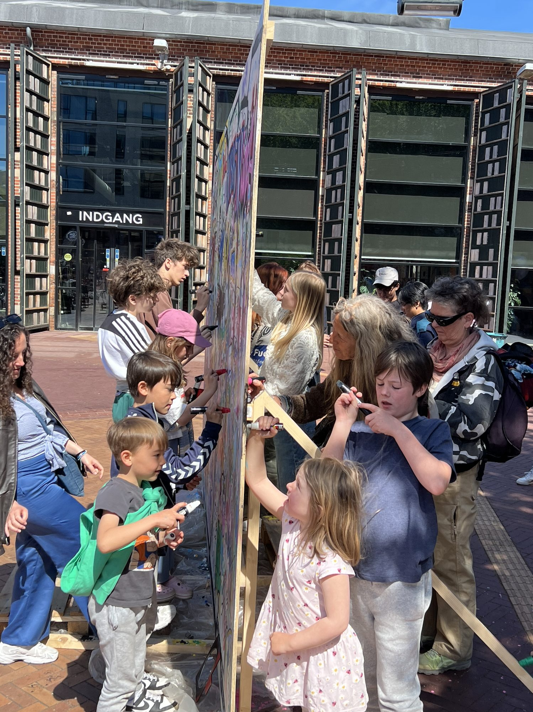
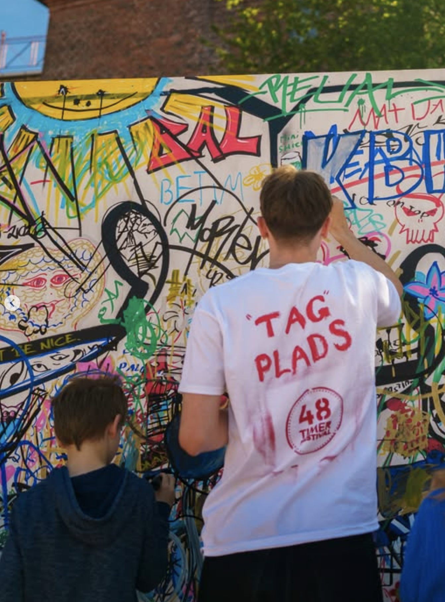
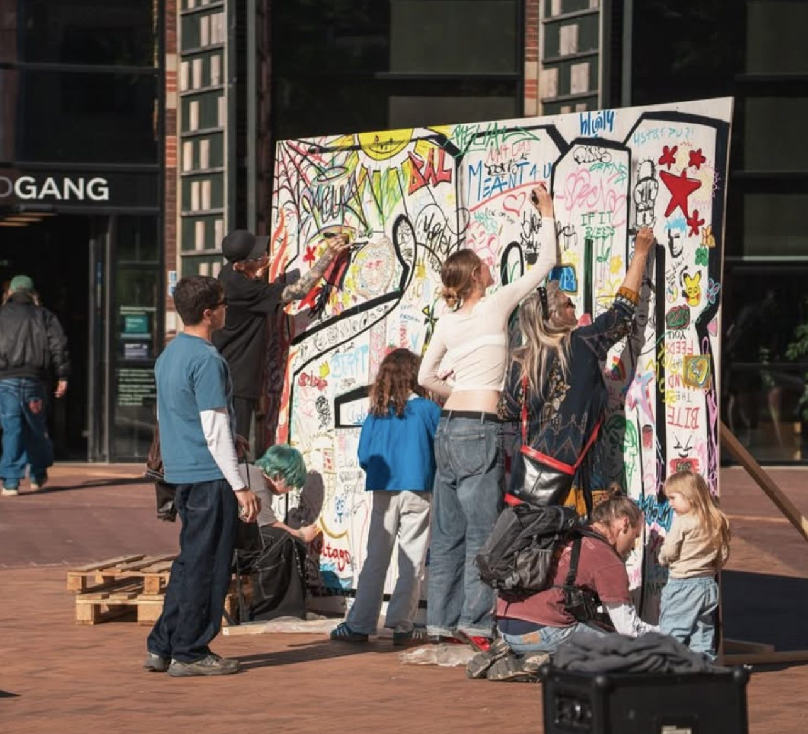
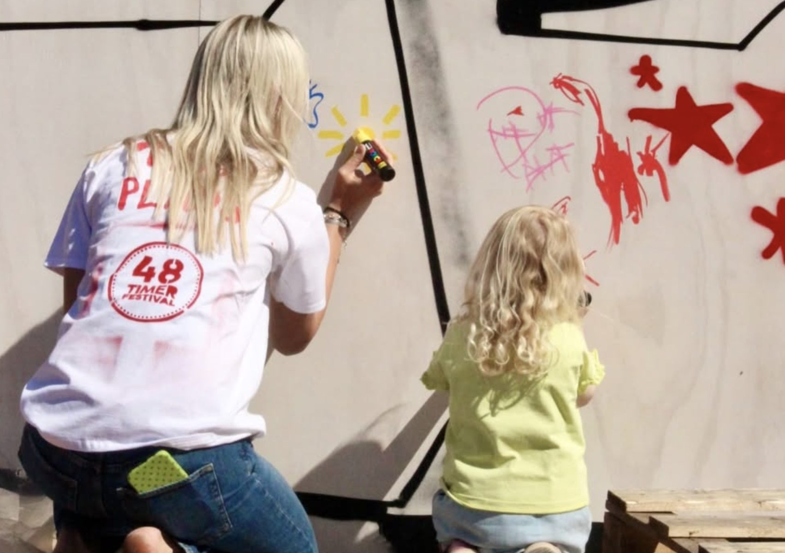
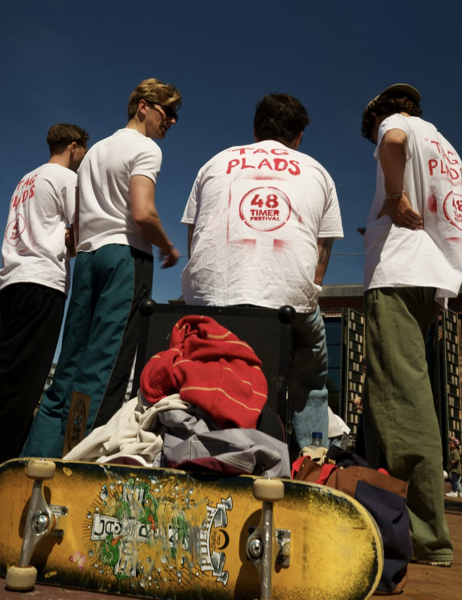
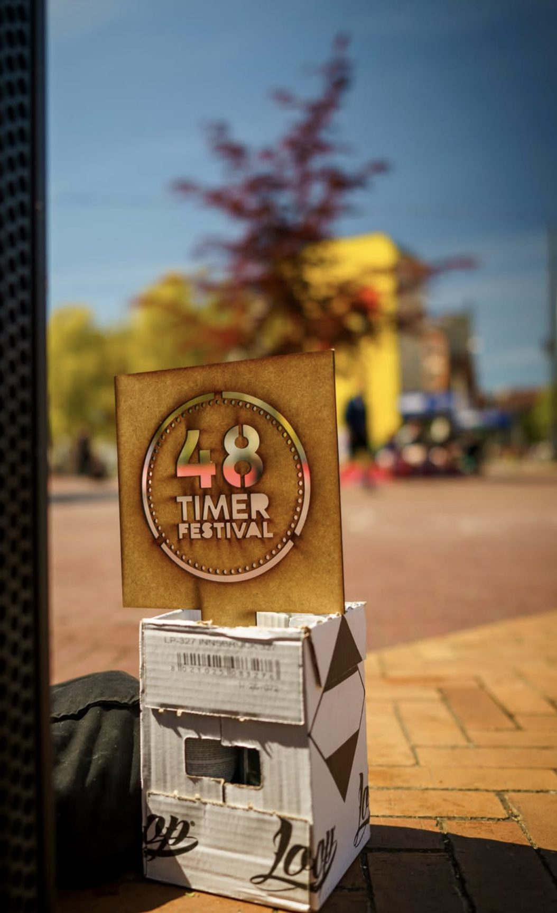
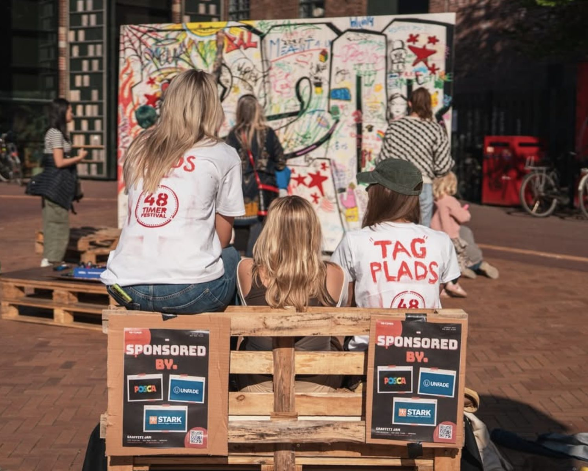
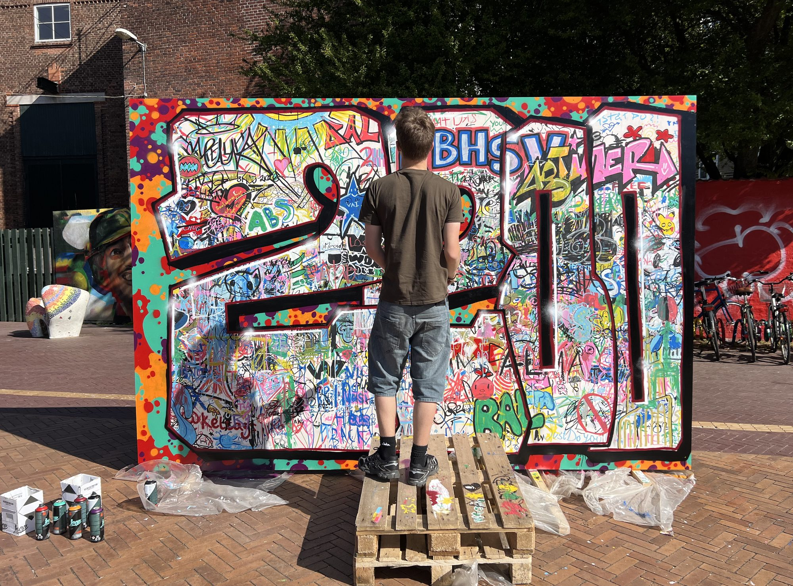
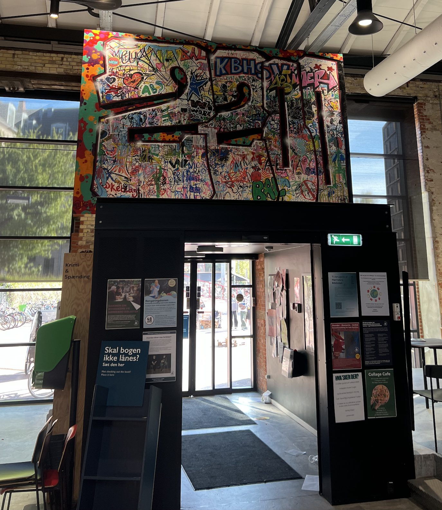

Til 48 Timer Festival forvandlede vi Den Røde Plads til et åbent lærred for Nørrebros gadekunst. I centrum stod et stort fælles lærred, som alle kunne male videre på med tuscher og spraydåser. Man behøvede ikke have erfaring, og målet var ikke individuelle præstationer, men ét værk skabt i fællesskab.
Projekt 03 / 05
Tag Plads
Et fælles lærred på Den Røde Plads til 48 Timer Festival.

Idéen
Eventet
En professionel graffitikunstner lagde rammen, og derefter tog de forbipasserende over. Børn, unge, forældre og ældre malte side om side hen over weekenden. Lørdag bandt kunstneren alle bidragene sammen til ét samlet værk. Omkring lærredet byggede vi et loungeområde af paller med musik og drikkevarer, så pladsen også blev et sted at hænge ud og følge værket vokse. Holdet bar håndsprayede t-shirts, så man kunne se, hvem der stod bag.
Efterlivet
Eventet blev godt besøgt, og det færdige værk hænger nu over indgangen på Nørrebro Bibliotek. POSCA, UNFADE og STARK sponsorerede tuscher, spraymaling og materialer, og resten af installationen blev genbrugt.
Min rolle
Jeg var med i alle dele af projektet, fra idéudvikling og kontakten til sponsorer til indkøb, opbygning og afvikling på dagen.









Næste projekt
Christian IV’s Bryghus→